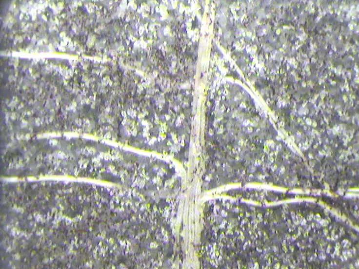
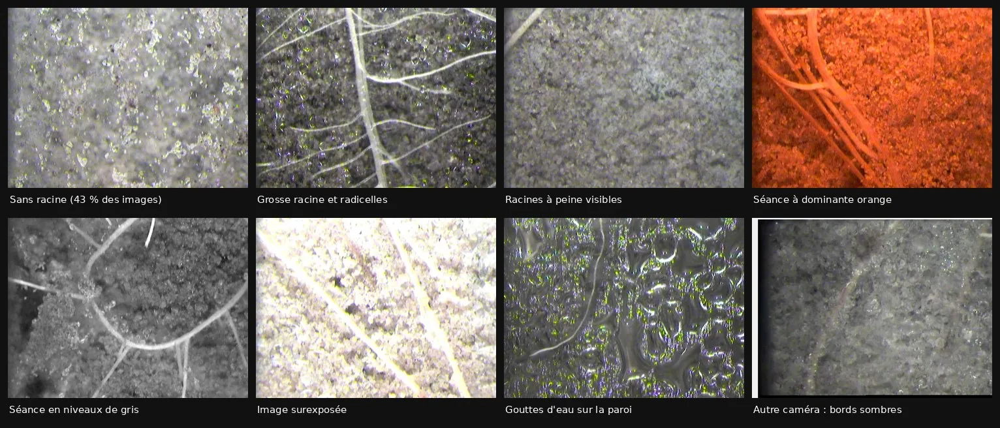
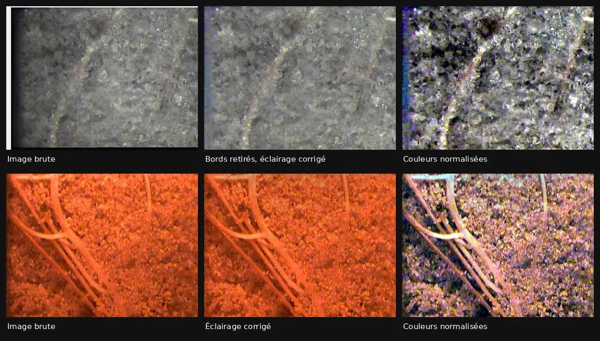
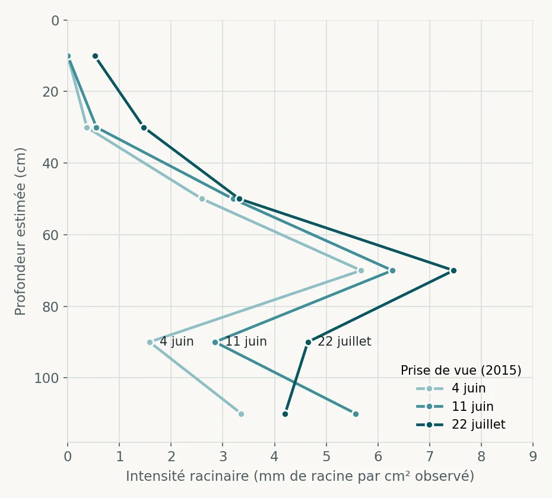
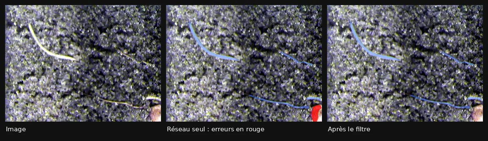

Projet personnel, code ouvert · Octobre à novembre 2026
Root Segmentator
Mesurer automatiquement les racines en millimètres sur des images de minirhizotron : longueur, diamètre et intensité racinaire, image par image, puis par tube, date et profondeur.
- Recouvrement médian entre racines détectées et racines annotées (Dice, de 0 à 1), sur des tubes jamais vus, y compris avec une autre caméra
- 0,74 à 0,79
- Écart sur la longueur totale des racines, après étalonnage
- 7,5 %
- Images analysées par minute sur un ordinateur portable, sans carte graphique
- 360
Figure 1
Root Segmentator : des images de minirhizotron aux mesures de racines
Un minirhizotron est un tube transparent enfoncé dans le sol : une caméra y photographie les racines contre la paroi (cercle). Pour chaque image, Root Segmentator repère les racines, puis mesure leur longueur, leur diamètre moyen et l’intensité racinaire, c’est-à-dire la longueur de racines par cm² d’image. Exemples tirés d’images de test, jamais vues pendant l’entraînement.
Image brute

Racines détectées

Mesures

- Longueur
- 67,1 mm
- Diamètre moyen
- 0,34 mm
- Intensité racinaire
- 27,6 mm/cm²
Images : jeu de données PRMI (Xu et al., 2022), licence CC0 Démo en ligne · Code sur GitHub
Le problème
Des milliers d’images, mesurées à la main
Un minirhizotron est un tube transparent enfoncé en biais dans le sol, près des plantes. Une caméra descend dans le tube et photographie les racines qui poussent contre la paroi, position après position, date après date.
On suit ainsi l’enracinement sans arracher les plantes. Mais une saison produit des milliers d’images, et mesurer chaque racine à la main prend des semaines.
J’ai travaillé sur le jeu de données public PRMI (arachide), sous licence CC0.
Schéma 1 · Le principe du minirhizotron
- Tube transparent, enfoncé en biais dans le sol.
- Caméra, descendue dans le tube.
- Fenêtre d’observation : ce que voit une image.
- Racines qui poussent contre la paroi.
Les données
Des images difficiles, des annotations imparfaites
Les images d’un minirhizotron sont prises dans le sol, à travers un tube, sur des semaines. Leur qualité varie beaucoup : séances entières à dominante orange ou en gris, éclairage inégal, gouttes d’eau sur la paroi, images surexposées. Plus de quatre images sur dix ne contiennent aucune racine, et certaines racines sont si fines ou si peu contrastées que l’annotateur lui-même hésite.
Figure 2
Des images très variées, et souvent difficiles
Huit images du jeu, telles que prises dans le tube. Plus de quatre images sur dix ne contiennent aucune racine ; ailleurs se côtoient grosses racines et radicelles, et certaines racines sont à peine visibles, même pour l’annotateur. La couleur et l’éclairage changent d’une séance à l’autre, et l’autre caméra laisse des bords inutilisables.

Images : jeu de données PRMI (Xu et al., 2022), licence CC0
Pour apprendre à reconnaître les racines, un modèle a besoin d’exemples annotés : des images où quelqu’un a tracé les racines. Celles du jeu public sont tracées en chaînes de rectangles :
- Fendues : il reste des trous entre les rectangles.
- Grossières : des rectangles de largeur fixe, quelle que soit l’épaisseur de la racine.
- Incomplètes : des racines sont oubliées.
- Selon les jeux, les tracés sont même décalés par rapport aux racines.
Un modèle qui apprend sur ces exemples apprend aussi leurs erreurs. Et le juger sur ces mêmes exemples ne dit pas s’il mesure juste.
Annotation correcte
Décalée
Fendue
Racine oubliée
Schéma 2 · Une même racine (trait gris) et son annotation (rectangles bleus)
Ce que j’ai fait
Corriger ce qui compte, automatiser le reste
- Corriger les images avant tout : retirer les bords inutilisables, corriger l’éclairage inégal, ramener les couleurs à la normale, image par image (figure 3).
- Corriger à la main 273 images, pour entraîner le modèle, le régler et surtout le tester sur une référence fiable.
- Combler automatiquement les fentes des autres annotations, avec une méthode vérifiée contre les corrections manuelles.
- Entraîner un réseau de neurones de segmentation (U-Net) sur 11 485 images.
- Ajouter un filtre qui retire les fausses détections, sans réentraîner le réseau.
- Vérifier l’échelle sur les données : le « 150 DPI » indiqué dans les métadonnées était faux d’un facteur 7. Sans cette vérification, toutes les longueurs auraient été fausses.
Figure 3
Corriger les images avant d’y chercher des racines
En haut, une image de l’autre caméra : bords inutilisables retirés, bord gauche assombri corrigé. En bas, une séance à dominante orange : les couleurs sont ramenées à la normale, image par image. Le réseau voit ainsi des images comparables, quelle que soit la séance.

Images : jeu de données PRMI (Xu et al., 2022), licence CC0
- Imageprise dans le tube
- Prétraitementrecadrage, correction de l’éclairage inégal
- U-Netrepère les racines, pixel par pixel
- Filtreretire les fausses détections
- Mesureslongueur, diamètre, intensité racinaire
Schéma 3 · La chaîne de traitement, de l’image aux mesures
Livré sous forme d’outil : une commande qui produit les mesures par image et par tube, date et profondeur, une API web, une image Docker et une démo en ligne.
Résultats et limites
Ce que l’outil fait bien, et ce qu’il ne fait pas
Évalué une seule fois, à la fin, sur des tubes jamais vus pendant le développement.
Résultats
- Recouvrement médian (Dice) de 0,79 sur 50 images corrigées à la main, 0,74 sur 4 743 images, et 0,79 sur 3 542 images d’une autre caméra jamais vue ; du même ordre que l’état de l’art publié sur ces images, sans y être directement comparable.
- Fausses alertes sur les images sans racine divisées par 3 à 4 grâce au filtre.
- Longueur totale des racines à 7,5 % près après étalonnage ; diamètre juste à quelques pour cent près pour les racines d’au moins 0,25 mm environ.
- Environ 360 images par minute sur un ordinateur portable, sans carte graphique.
Limites
- Les racines fines ou peu visibles sont en partie manquées : la longueur est sous-estimée image par image. L’étalonnage corrige ce biais pour des totaux (par tube, par date), pas pour une image seule.
- Le diamètre des racines de moins de 0,25 mm environ est surestimé.
- L’outil est validé sur l’arachide et les caméras du jeu PRMI ; d’autres espèces ou caméras demanderaient une vérification.
- Les corrections manuelles viennent d’un seul annotateur.
Figure 4
Ce que vous recevez : le profil d’enracinement d’un tube, au fil de la saison
Intensité racinaire (millimètres de racine par cm² d’image) selon la profondeur, pour un même tube à trois dates de 2015, calculée automatiquement sur 282 images (94 positions par date). L’enracinement progresse entre juin et juillet. Ce profil suit de très près celui de l’annotation des mêmes images (corrélation de 0,99). Profondeur estimée à partir de la position de la caméra dans le tube.

Images : jeu de données PRMI (Xu et al., 2022), licence CC0 ; tube du jeu de test, jamais vu à l’entraînement
Figure 5
Retirer les fausses détections
Le réseau repère les racines (bleu), mais aussi parfois des objets qui leur ressemblent : ici un débris clair au bord de l’image (rouge). Un second modèle, entraîné à reconnaître ces erreurs à leur taille, leur forme et leur contexte, les retire sans toucher aux vraies racines.

Images : jeu de données PRMI (Xu et al., 2022), licence CC0
Ce que j’en retiens pour vos projets
Vérifier les données avant de mesurer
Les métadonnées annonçaient une échelle fausse d’un facteur 7, et les annotations publiques comptaient trous et oublis. Sans ces vérifications, l’outil aurait produit des mesures fausses avec de très bons scores. Corriger un petit lot d’annotations à la main a aidé ; ajouter des milliers d’images, même imparfaites, a aidé davantage.
Pour vos projets, avant de financer des semaines d’annotation soignée, une étude de faisabilité permet de vérifier vos données et de mesurer ce qui rapporte vraiment.
Essayer
Voir l’outil, lire le code, en parler
- Démo en ligneDéposer une image, voir les racines et les mesures. La démo gratuite met environ une minute à se réveiller.
- Code sur GitHubLe code, la fiche du modèle et le détail technique, en code ouvert.